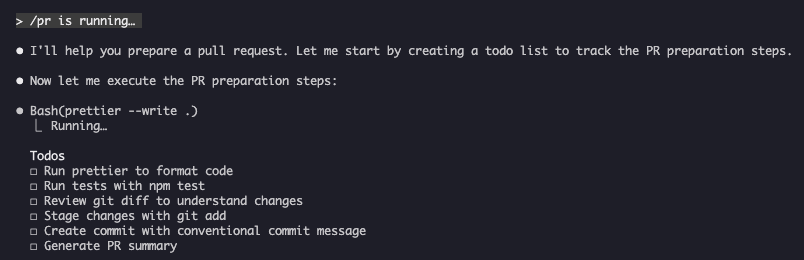

01 · Slash Commands：一个斜杠，召唤一个工作流¶
一句话： 在输入框敲 /，就能调出一个命令。命令可以是 Claude Code 自带的，也可以是你自己写好的一套固定流程。写一次，以后每次只需输入一个斜杠。
命令从哪里来¶
内建命令
/help、/clear、/model 等，开箱即用，无需安装。
自定义命令
放在 .claude/commands/ 或写成 skill，把你常用的一大段提示词变成 /名字。
插件命令
安装 plugin 后自动出现，适合团队统一分发。
MCP 提示词
MCP server 也可以暴露命令，接入外部系统时附带。
先记住这 12 个¶
| 命令 | 作用 | 什么时候用 |
|---|---|---|
/init |
扫描项目，生成 CLAUDE.md |
新项目第一件事 |
/clear |
清空当前对话 | 换话题时，省额度也更聪明 |
/compact [要求] |
压缩对话，保留要点 | 对话很长但还要继续 |
/context |
查看上下文占用 | 感觉 Claude “变笨”时先看这里 |
/model |
切换模型 | 简单任务换快模型，难题换强模型 |
/effort |
调整思考强度 | 复杂问题调高，琐碎任务调低 |
/plan |
进入规划模式 | 多文件改动，先出方案再动手 |
/rewind |
回退到之前的存档 | 改坏了，见 08 · Checkpoints |
/resume |
恢复以前的会话 | 继续昨天的工作 |
/code-review |
审查当前改动的正确性问题 | 提交前自查 |
/doctor |
诊断安装与配置 | 出现异常时 |
/usage |
查看用量与限额 | 关心额度时 |
更多实用内建命令
| 命令 | 作用 |
|---|---|
/config |
查看或修改设置，修改会保存到 ~/.claude/settings.json |
/memory |
编辑记忆文件，见 02 · Memory |
/skills · /agents · /hooks · /mcp · /plugin |
查看与管理对应能力 |
/cd <路径> |
在当前会话中切换工作目录 |
/goal <目标> |
为当前会话设定一个明确的完成目标 |
/recap |
回到旧会话时，快速回顾刚才做了什么 |
/fork · /branch · /subtask |
复制对话做实验，或委派一个会回传结果的子任务 |
/ultraplan |
生成更完整的计划，在浏览器中审阅 |
/fewer-permission-prompts |
分析常用命令，帮你生成合理的免确认列表 |
/team-onboarding |
根据项目现有配置，生成新同事上手说明 |
/statusline |
自定义终端底部状态栏 |
内建命令会随版本增减，以你当前版本 /help 的输出为准。
三步写出你的第一个命令¶
-
建目录
-
写一个 Markdown 文件，文件名就是命令名。例如
.claude/commands/pr.md：--- description: 整理代码、暂存改动并准备 pull request allowed-tools: Bash(git add:*), Bash(git status:*), Bash(git diff:*), Bash(npm test:*) --- 在创建 PR 之前，请按下面步骤执行： 1. 跑测试：`npm test` 2. 检查 diff：`git diff HEAD` 3. 暂存改动：`git add .` 4. 生成符合 conventional commits 的提交信息 5. 输出 PR 摘要：改了什么、为什么改、做了哪些测试description会显示在命令菜单里；allowed-tools让这些 git 命令免于逐条确认。 -
在 Claude Code 中输入
/pr，它就会按你写的清单一步步执行：
Tip
这个目录里已经备好了 8 个可直接使用的命令，复制到项目里即可：
cp docs/howto/01-slash-commands/*.md .claude/commands/
（注意不要把 README.md 也复制进去）
| 文件 | 命令 | 用途 |
|---|---|---|
optimize.md |
/optimize |
分析性能瓶颈与优化机会 |
pr.md |
/pr |
提交 PR 前的整理与检查 |
commit.md |
/commit |
生成规范的提交说明 |
push-all.md |
/push-all |
暂存、提交、推送一步完成 |
unit-test-expand.md |
/unit-test-expand |
扩充测试覆盖 |
generate-api-docs.md |
/generate-api-docs |
生成 API 文档 |
doc-refactor.md |
/doc-refactor |
重组项目文档 |
setup-ci-cd.md |
/setup-ci-cd |
初始化 CI/CD |
让命令更聪明：三个动态写法¶
命令还是 Skill？¶
| 你想要的 | 选择 |
|---|---|
| 自己明确触发，一个简短的固定动作 | Slash Command |
| 希望 Claude 自动判断何时使用 | Skill |
| 需要附带脚本、模板、参考资料 | Skill |
| 在多个项目中重复使用 | Skill（放在 ~/.claude/skills/） |
两者现在是同一套机制：skill 同样可以用 /名字 手动调用。新写的复杂流程，推荐直接做成 Skill。
常见坑¶
| 现象 | 原因与解决 |
|---|---|
| 文件放好了，命令却没出现 | 检查路径是否为 .claude/commands/、扩展名是否为 .md、frontmatter 的 --- 是否成对 |
| 命令能出现，但执行到 git 时反复确认 | 在 allowed-tools 中加上对应的 Bash(...) 规则 |
网上教程里的 /vim、/pr-comments 用不了 |
这些已被移除，以当前版本 /help 为准 |
| 命令名写成了中文 | 命令名、description、allowed-tools 等字段保持英文，只有正文可以写中文 |
下一步¶
留言板
全站所有页面共用这一个留言板，欢迎在这里提问、分享经验、指出错误。登录 GitHub 即可留言，请勿贴出公网 IP、订阅链接或证件信息。